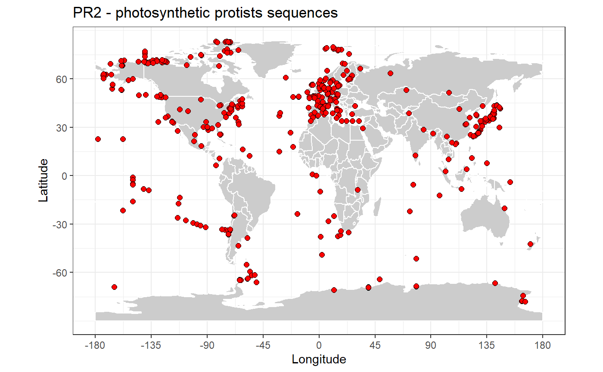

PR2 statistics
Daniel Vaulot
2018-08-10
pr2_stats.Rmdlibrary("pr2database") data(pr2) packageVersion("pr2database") #> [1] '4.12.1' pr2_photo <- pr2 %>% filter((division %in% c("Chlorophyta", "Dinophyta", "Cryptophyta", "Haptophyta", "Ochrophyta", "Cercozoa")) & !(class %in% c("Syndiniales", "Sarcomonadea"))) pr2_ref <- pr2 %>% filter(!is.na(reference_sequence))
PR2 fields
colnames(pr2) #> [1] "pr2_main_id" "pr2_accession" #> [3] "genbank_accession" "start" #> [5] "end" "label" #> [7] "gene" "organelle" #> [9] "species" "chimera" #> [11] "chimera_remark" "reference_sequence" #> [13] "added_version" "removed_version" #> [15] "edited_version" "edited_by" #> [17] "edited_remark" "remark" #> [19] "taxo_id" "kingdom" #> [21] "supergroup" "division" #> [23] "class" "order" #> [25] "family" "genus" #> [27] "taxon_trophic_mode" "taxo_edited_version" #> [29] "taxo_edited_by" "taxo_removed_version" #> [31] "taxo_remark" "reference" #> [33] "seq_id" "sequence" #> [35] "sequence_length" "ambiguities" #> [37] "sequence_hash" "gb_sequence" #> [39] "pr2_metadata_id" "gb_date" #> [41] "gb_locus" "gb_definition" #> [43] "gb_organism" "gb_organelle" #> [45] "gb_taxonomy" "gb_strain" #> [47] "gb_culture_collection" "gb_clone" #> [49] "gb_isolate" "gb_isolation_source" #> [51] "gb_specimen_voucher" "gb_host" #> [53] "gb_collection_date" "gb_environmental_sample" #> [55] "gb_country" "gb_lat_lon" #> [57] "gb_collected_by" "gb_note" #> [59] "gb_references" "gb_publication" #> [61] "gb_authors" "gb_journal" #> [63] "pubmed_id" "eukref_name" #> [65] "eukref_source" "eukref_env_material" #> [67] "eukref_env_biome" "eukref_biotic_relationship" #> [69] "eukref_specific_host" "eukref_geo_loc_name" #> [71] "eukref_notes" "pr2_sample_type" #> [73] "pr2_sample_method" "pr2_latitude" #> [75] "pr2_longitude" "pr2_ocean" #> [77] "pr2_sea" "pr2_sea_lat" #> [79] "pr2_sea_lon" "pr2_continent" #> [81] "pr2_country" "pr2_location" #> [83] "pr2_location_geoname" "pr2_location_geotype" #> [85] "pr2_location_lat" "pr2_location_lon" #> [87] "pr2_country_geocode" "pr2_country_lat" #> [89] "pr2_country_lon" "pr2_sequence_origin" #> [91] "pr2_size_fraction" "pr2_size_fraction_min" #> [93] "pr2_size_fraction_max" "metadata_remark"
Basic statistics
All taxa
Total number of PR2 sequences : 183973
# stringr::str_c("Number of sequences : ", nrow(pr2)) pr2_taxa <- pr2 %>% select(kingdom:genus, species) %>% summarise_all(funs(n_distinct(.))) knitr::kable(pr2_taxa, caption="Number of taxa - all sequences")
| kingdom | supergroup | division | class | order | family | genus | species |
|---|---|---|---|---|---|---|---|
| 2 | 12 | 43 | 253 | 569 | 1341 | 22771 | 46076 |
Photosynthetic protists
Number of photosynthetic protist sequences : 23145
# stringr::str_c("Number of sequences (active only) : ", nrow(pr2_photo)) pr2_taxa <- pr2_photo %>% select(kingdom:genus, species) %>% summarise_all(funs(n_distinct(.))) knitr::kable(pr2_taxa, caption="Number of taxa - photosynthetic protist sequences")
| kingdom | supergroup | division | class | order | family | genus | species |
|---|---|---|---|---|---|---|---|
| 1 | 4 | 5 | 61 | 132 | 254 | 1184 | 3319 |
Reference sequences
Reference sequences are a subset of PR2 representative of taxonomic groups.
Number of reference sequences : 24097
# stringr::str_c("Number of reference sequences : ", nrow(pr2_ref)) pr2_taxa <- pr2_ref %>% select(kingdom:genus, species) %>% summarise_all(funs(n_distinct(.))) knitr::kable(pr2_taxa, caption="Number of taxa - Reference sequences")
| kingdom | supergroup | division | class | order | family | genus | species |
|---|---|---|---|---|---|---|---|
| 1 | 10 | 37 | 204 | 453 | 1105 | 8795 | 13639 |
Sequence length
ggplot(pr2) + geom_histogram(aes(sequence_length), binwidth = 100, fill="blue") + xlim(0,3000) + xlab("PR2 sequence length") + ylab("Number of sequences") + ggtitle("All sequences")

ggplot(pr2_ref) + geom_histogram(aes(sequence_length), binwidth = 100, fill="blue") + xlim(0,3000) + xlab("PR2 sequence length") + ylab("Number of sequences") + ggtitle("Reference sequences")

Taxonomic composition
pr2.env <- new.env() pr2.env$taxo_levels = c("kingdom", "supergroup", "division", "class", "order", "family", "genus", "species") pr2.env$taxo_levels_number =length(pr2.env$taxo_levels) pr2_treemap <- function(pr2, taxo_rank) { # Define the levels level1 = pr2.env$taxo_levels[taxo_rank] level2 = pr2.env$taxo_levels[taxo_rank+1] # Group pr2_class <- pr2 %>% group_by_(level1,level2) %>% summarise(sequence_number= n()) # Do a simple treemap treemap::treemap(pr2_class, index=c(level1,level2), vSize="sequence_number", title="",asp=1, lowerbound.cex.labels= 0.2, fontsize.labels = 12, palette="Blues", format.legend = list(scientific = FALSE, big.mark = " ")) }


Genera most represented
All taxa
pr2_genus <- pr2 %>% group_by(class, genus) %>% count() %>% ungroup() %>% top_n(30) ggplot(pr2_genus) + geom_col(aes(x=forcats::fct_reorder(stringr::str_c(class,"-",genus), n), y=n)) + coord_flip() + ggtitle("Most represented genera - all") + xlab("Genera") + ylab("Number of sequences")

Reference sequences
pr2_genus <- pr2_ref %>% group_by(class, genus) %>% count() %>% ungroup() %>% top_n(30) ggplot(pr2_genus) + geom_col(aes(x=forcats::fct_reorder(stringr::str_c(class,"-",genus), n), y=n)) + coord_flip() + ggtitle("Reference sequences") + xlab("Genera") + ylab("Number of sequences")

Only photosynthetic protists
pr2_genus <- pr2_photo %>% group_by(class, genus) %>% count() %>% ungroup() %>% top_n(30) ggplot(pr2_genus) + geom_col(aes(x=forcats::fct_reorder(stringr::str_c(class,"-",genus), n), y=n)) + coord_flip() + ggtitle("Most represented genera - only photosynthetic protists") + xlab("Genera") + ylab("Number of sequences")

World sequence distribution
map_get_world <- function(resolution="coarse"){ worldMap <- rworldmap::getMap(resolution = resolution) # Change to "coarse" for global maps / "low" for regional maps world.points <- fortify(worldMap) world.points$region <- world.points$id world.df <- world.points[,c("long","lat","group", "region")] } map_world <- function(color_continents = "grey80", color_borders = "white", resolution = "coarse") { # Background map using the maps package # world.df <- map_data("world") world.df <- map_get_world(resolution) map <- ggplot() + geom_polygon(data = world.df, aes(x=long, y = lat, group = group), fill=color_continents, color=color_borders) + # scale_fill_manual(values= color_continents , guide = FALSE) + scale_x_continuous(breaks = (-4:4) * 45) + scale_y_continuous(breaks = (-2:2) * 30) + xlab("Longitude") + ylab("Latitude") + coord_fixed(1.3) + theme_bw() # species_map <- species_map + coord_map () # Mercator projection # species_map <- species_map + coord_map("gilbert") # Nice for the poles return(map) }
All taxa
map_world() + geom_point(data=pr2, aes(x=pr2_longitude, y=pr2_latitude), fill="blue", size=2, shape=21) + ggtitle("PR2 - all sequences")

Photosynthetic protists
map_world() + geom_point(data=pr2_photo, aes(x=pr2_longitude, y=pr2_latitude), fill="red", size=2, shape=21) + ggtitle("PR2 - photosynthetic protists sequences")
